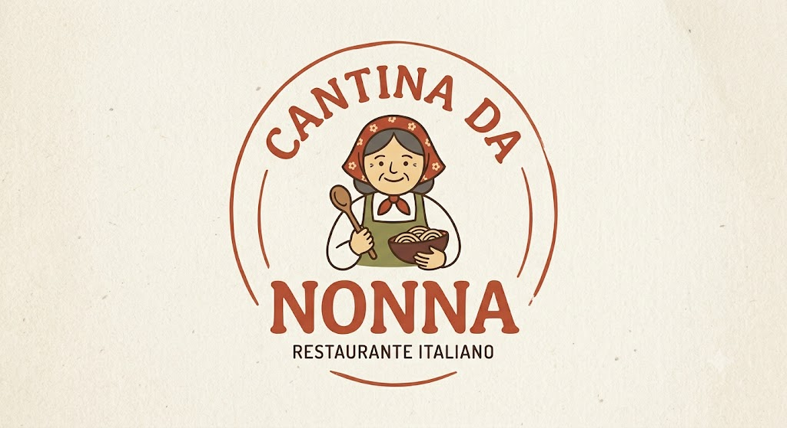

Massas e pizzas artesanais, feitas na hora.
Sobre a casa
Trabalhamos com ingredientes frescos e receitas italianas de família. Aberto de terça a domingo.
Diferenciais
- Massas frescas feitas todos os dias
- Forno a lenha para as pizzas
- Receitas de família